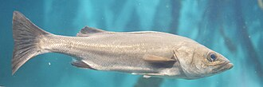

すずき（鱸）の漁獲量 都道府県ランキング
1位から3位までと、とれた量
すずきが日本でいちばん多くとれるのは千葉県です。728 tで、全国（4,287 t）の17%を占めます。

| 順位 | 都道府県 | 漁獲量 | 全国に占める割合 |
|---|---|---|---|
| 1位 | 千葉県 | 728 t | 17% |
| 2位 | 兵庫県 | 488 t | 11% |
| 3位 | 宮城県 | 448 t | 10% |
この数字について
- 分類：鱸の仲間
- 全国の漁獲量：4,287 t
- この数字が表すもの：漁獲量（海でとった重さ。養殖は含みません）
- 調査：海面漁業生産統計調査（海面漁業） 令和6年
- 37県分を調査（調査していない県は順位に入りません）
すずきの漁獲量について、よくある質問
- すずきの漁獲量が日本一の都道府県はどこですか？
- 千葉県です。海面漁業生産統計調査（海面漁業）（令和6年）で728 tでした。
- すずきの漁獲量ランキング2位・3位はどこですか？
- 2位は兵庫県（488 t）、3位は宮城県（448 t）です。
- すずきの全国の漁獲量はどれくらいですか？
- 4,287 t（令和6年）です。